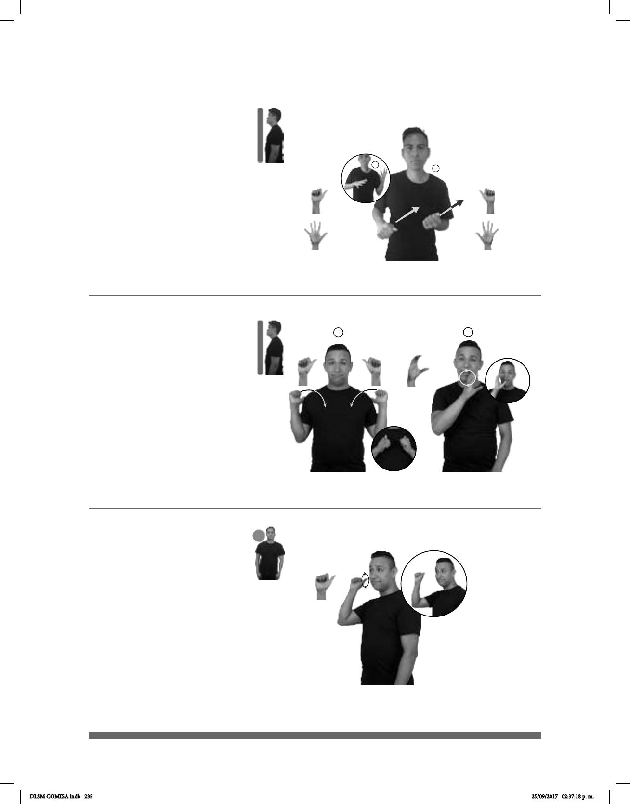

235
1
2
1
2
(A-8)
_____muy_
ESE ABRIGO CALIENTE
Ese abrigo es muy caliente.
Abandonar (A-7)
pos-MI HIJO pro-YO ABANDONAR
Yo abandoné a mi hijo.
(A-9)
ABRIL CUMPLEAÑOS pos-MI #TÍA pro-NOSOTROS HACER FIESTA
Seña: I. SS; II. SM
I. A.4; II. C.1
I. Las palmas inician
hacia afuera y terminan hacia el centro;
II. Palma hacia la izquierda.
I. De los hombros al centro
del pecho; II. A la altura de la boca.
I. Los brazos se mueven
formando un arco; II. La mano se mueve
formando círculos.
sust. m. Prenda de vestir
larga, abierta por delante y provista de
mangas, que se pone sobre las demás
cuando hace frío.
Seña: SB
MD y MB seña que
pasa de A.1 a 5.1.
MD palma hacia abajo.
MB palma hacia arriba.
MD y MB a la altura del
plexo del lado derecho al izquierdo.
Recto hacia la
izquierda y hacia arriba mientras los
dedos se extienden.
tr. Dejar solo algo o a
alguien alejándose de ello o dejando de
cuidarlo.
Seña: SM
A.1
Palma hacia afuera.
A la altura del rostro,
del lado derecho.
La mano se mueve
formando círculos.
sust. m. Cuarto mes
del año que tiene 30 días, sigue a
marzo y precede a mayo.
DLSM COMISA.indb 235 25/09/2017 02:37:18 p. m.